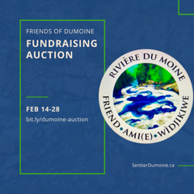

Merci pour votre aide !

Enchères FODR
La rivière Dumoine dans l'ouest du Québec, est l'un des derniers affluents sauvages à écoulement libre sans barrage et sans barrage. Celui-ci n'est pas colonisé et qui subsistent dans le bassin versant de la rivière des Outaouais. C'est unique puisque la rivière est habitée, explorée et exploitée par l'homme depuis plus de mille années. Le gouvernement du Québec à protéger le corridor de la rivière Dumoine en tant que réserve aquatique en 2009.
À nouveau en 60 ans, vous pouvez randonner la basse Dumoine ainsi que la faire en canoë. Un groupe de bénévoles, les amis de Rivière du Moine, ont ré-ouvert tout le chemin de portage et vingt campings sauvages, dont beaucoup sur les anciennes haltes de la rivière, pour faire du sentier une expérience de randonnée fantastique.
Les partenaires Zec Dumoine, la Société pour la nature et les parcs du Canada et les Amis de Rivière du Moine travaillent d'arrache-pied pour faire des recherches sur l'histoire des familles Dumoine, les anciens portages, les haltes, les tours à feu, les camps de fortune et les points forts naturels du sentier pour lui donner vie. Pour vous lorsque vous choisissez de visiter le sentier en personne ou virtuellement sur ce site Web.
Le chemin de portage Dumoine met en lumière les choses incroyables qui peuvent être accomplies lorsque des groupes de personnes se réunissent pour soutenir une cause.
S'il vous plaît visitez-nous souvent et soutenez notre travail.


« La Vallée Dumoine est mon travail et mon terrain de jeu depuis plus de cinquante ans. Depuis 1969, j'ai essayé de la visiter au moins une fois par saison. La création de ce sentier est une belle contribution pour permettre aux voyageurs et aux guides d'apprécier et d'interpréter autrement l'histoire et le milieu naturel de la rivière Dumoine... Imaginez-vous en compagnie des voyageurs du 19e siècle empruntant le sentier tote road trail, indiquant les endroits où ils ont séjourné et le travail qu'ils ont fait avec les choses qu'ils ont laissées derrière eux. Découvrez des incendies, des reliques perdues, d'anciens terrains de camping, des poutres équarries, des outils et des fondations de bâtiments tout en marchant avec eux à travers leur histoire. »
- Wally Schaber les Amis de Rivière du Moine

Depuis que nous avons commencé la réouverture du chemin de portage Dumoine en 2019, ce fut un travail d'amour pour de nombreux bénévoles qui sont fiers de s'appeler les Amis de Rivière du Moine.
La ZEC Dumoine est fière de faire partie de l'initiative chemin de portage Dumoine et espère partager le magnifique territoire avec tous les amoureux de la nature.
La section de la vallée-de-l'Outaouais de la Société pour la nature et les parcs du Canada (SNAP-VO) est fière de soutenir le développement et l'entretien continu du chemin de portage Dumoine.